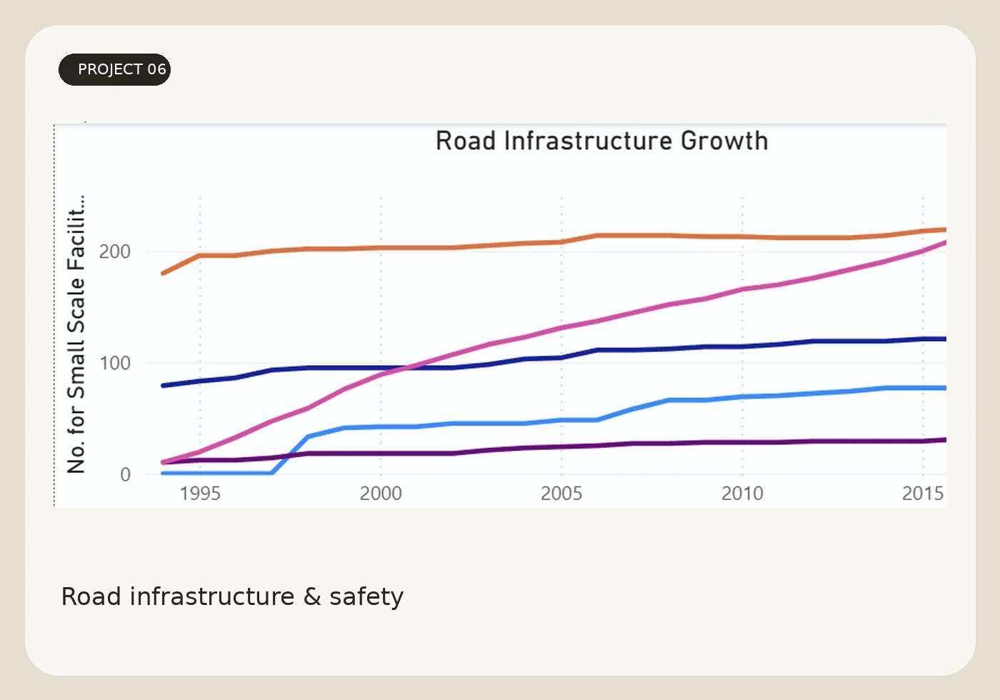
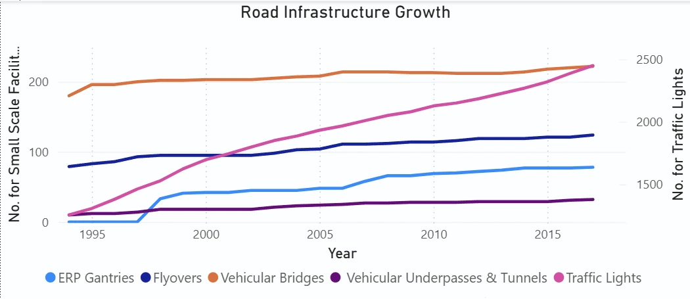
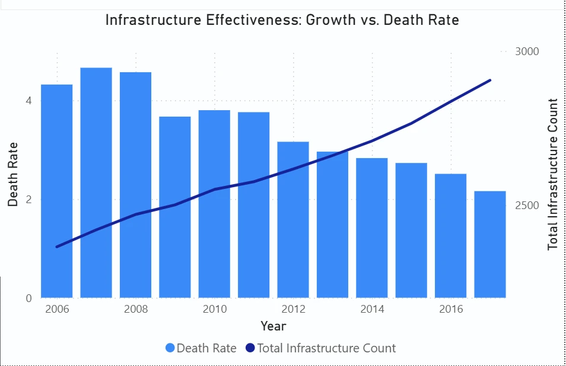
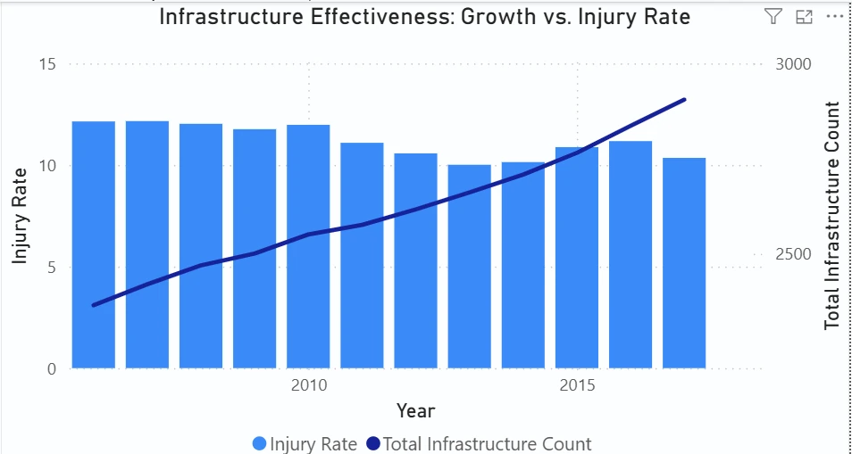
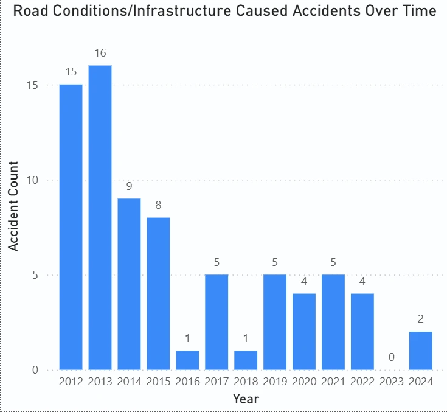
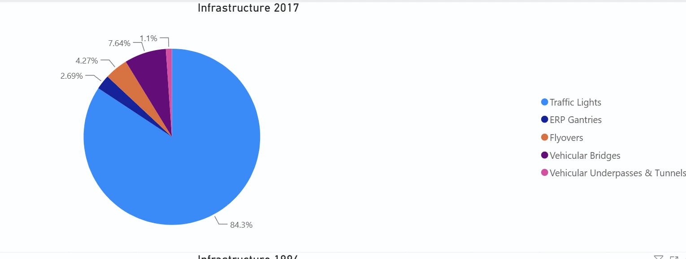

PROJECT 05 / DATA ANALYTICS
Road Safety & Infrastructure Analysis.
My infrastructure analysis for a group project using Singapore road-safety data.
Team project · analysis contribution
Project at a glance
Created Power BI measures and charts for Theme 4: infrastructure effectiveness.
Power BI · DAX · PandasParallel trends do not demonstrate causation; source series cover different years.

Project overview
Our group data visualisation project examined traffic accident patterns and road safety in Singapore. My part was Theme 4: infrastructure effectiveness, which compared changes in traffic lights, ERP gantries, flyovers, vehicular bridges, underpasses and tunnels with safety trends.
- The team prepared the datasets using Python and Pandas.
- I connected the processed tables in Power BI and created the Total Infra Points, Injuries per 1000 Vehicles and Road Condition Accidents measures.
- I used these to build infrastructure-growth charts, comparisons with injury and death rates, distribution charts and a view of accidents linked to road conditions.
I also wrote the infrastructure findings and recommendations for the group report. The charts showed infrastructure growth alongside lower death rates, with injuries declining more slowly. Those patterns were useful for discussion, but they did not prove that infrastructure alone caused the improvements. My contribution focused on this theme, rather than the other members’ analyses of driver behaviour, vehicle types or policy.

The problem
Our group was analysing road safety in Singapore. My part was to examine whether growth in infrastructure, including traffic lights, ERP gantries, flyovers, bridges and underpasses, lined up with changes in safety measures.
The solution
We cleaned the datasets with Python and Pandas. I linked the relevant tables in Power BI and compared infrastructure counts with accident, injury and death-rate trends.
Analysis and charts
- The reported road traffic death rate fell from 4.7 in 2006 to 2.2 in 2016, while infrastructure counts increased.
- The injury-rate measure fell more slowly, from 12.2 in 2008 to 10.3 in 2016.
- Reported road-condition accidents fell from 16 in 2013 to five or fewer per year from 2016 onward in the data reviewed.
- Traffic lights made up about 84% of the infrastructure counted in 2017.

Road traffic death rate
Infrastructure count compared with the death-rate measure.

Injury rate
Infrastructure count compared with the injury-rate measure.

Road-condition accidents
Reported accidents attributed to road conditions.

Infrastructure distribution
Traffic lights were the largest category in the 2017 count.
From open datasets to safety trends
Select a step to explore the workflow.
Source datasets
The group used data on road facilities, traffic deaths, accident causes, casualties and vehicle population.
Compare the magnitude of change
Compare the original reported endpoints. Percentages are calculated from those values, not new research findings.
Indexed values compare the relative change of two different measures, not actual counts or causal effects.
The percentages describe relative declines over different periods; they do not establish the causal effect of infrastructure.
What I worked on
- Connected the processed traffic facilities, vehicular facilities, death-rate, accident-cause, casualty and vehicle-population tables in Power BI.
- Created Total Infra Points, combining traffic lights, ERP gantries, flyovers, vehicular bridges, underpasses and tunnels.
- Created the Injuries per 1000 Vehicles and Road Condition Accidents measures.
- Built the infrastructure-growth chart, injury and death-rate comparisons, infrastructure-distribution charts and road-condition accident chart.
- Wrote up the Theme 4 findings and recommendations for the group report.
Technologies
Results, limitations & next steps
The charts showed infrastructure growth alongside a fall in the reported road traffic death rate from 4.7 in 2006 to 2.2 in 2016. Injury rates fell more slowly.
These charts show trends over the same period. They do not prove that adding infrastructure caused the fall in deaths or injuries.
- The datasets cover different periods, so not every series can be compared over the same years.
- Driver behaviour and other changes could also affect accident rates.
- Counting facilities does not tell us their condition, location or individual effect on safety.
If I continued this work, I would look more closely at specific crossings and traffic lights rather than relying on the total number of facilities.
Tools: Python, Pandas, Power BI and DAX. Data source: data.gov.sg. My focus was infrastructure effectiveness, Theme 4 of the group project.